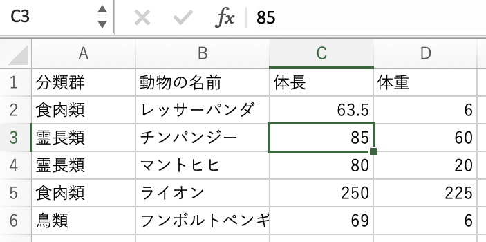

コードを表示
# dfはデータフレーム(data frame)の頭文字から
df_zoo <-
readr::read_csv("data-raw/tokushima_zoo_animals22.csv",
col_types = "ccdd_")# dfはデータフレーム(data frame)の頭文字から
df_zoo <-
readr::read_csv("data-raw/tokushima_zoo_animals22.csv",
col_types = "ccdd_")データと言われて思い浮かべるものはなんでしょうか。 ここではデータをさまざまな計測や観察により得られる情報のことを示します。 対象から情報を引き出したものと言い換えることもできます。 多くは数値の形をしていますが、文字列である場合もあります。 例をあげてみましょう。 ある動物について、体の一部の大きさや体重を測る、雌雄を調べる。 これらはデータの一つです。
# ある動物の種類についての分類群や体重を調べました
c("食肉類", "鳥類", "食肉類")[1] "食肉類" "鳥類" "食肉類"c(6, 3.5, 5.4)[1] 6.0 3.5 5.4複数の動物の体重のように共通の手法によって得られた値のことを変数といいます。 動物の体重は、個体や種類が違うと値も変わります。
体重を記録するときは数値を用いました。 このように数量を表す変数のことを量的変数といいます。 数値からなる変数なので、平均を求めたり大きい順番に並び替えるといった処理が可能です。
量的変数の場合、数値の種類によってさらに離散変数と連続変数に分類できます。 変数の数値がとり得る値が一定の間隔によりバラバラなものを離散変数と呼びます。 例えばサイコロの出目は一般的に1から6までの整数であるため、離散変数です。 また動物を1頭、2頭と数えた個体数も同じです。
離散型の量的変数に対し、連続値で表現される変数を連続変数といいます。 3.5\(kg\)、5.4\(kg\)のように表現される体重は連続変数です。
では雌雄や分類群はどのように記録するのが適切でしょうか。 これらは数量として扱いにくいものです。 「雄」や「雌」、「鳥類」や「霊長類」という具合に項目を変数として扱う場合、 それは質的変数またはカテゴリ変数と呼ばれます。 質的変数は量的変数のように足し算や引き算といった計算ができないのが特徴です。
変数の性質により、量的変数と質的変数をより細かく分類することもあるよ。 尺度水準と呼ばれる基準を用いると、量的変数は間隔尺度と比例尺度に、質的変数は名義尺度と順序尺度に分けて考えることができるんだ。それぞれの特徴を説明するね。
例) 華氏で記録した温度例) 動物の保全状況例) 雌雄、動物の分類群データの種類に応じて名前がついている理由は、 データの種類によって適切なデータ分析の手法が異なるためです。 データ分析を行う際は、データがどの種類の変数なのか意識することが大切です。
データ分析の作業においては、データの変数を比較し、関係を調べることが頻繁に行われます。 特定の個体や観測について複数の項目を同時に扱えるようにするために、データを表形式でまとめて表現します。 これを表データまたはデータフレームと呼びます。
データフレームの例として、いくつかの動物の体の大きさ（体長）と体重の記録をデータフレームにまとめてみましょう。 データフレームでは個人や個体、観測といったデータを一つの行にまとめます。 レッサーパンダの体長と体重の行、チンパンジーの体長と体重の行と、それぞれの値を行単位で記録します。 22種類の動物のデータをとった場合は22行、40種の動物についてであれば40行となりますね。 また、動物の分類群や名前や体長、体重といった変数を列として表します。
| 分類群 | 動物の名前 | 体長(cm) | 体重(kg) |
|---|---|---|---|
| 食肉類 | レッサーパンダ | 63.5 | 6 |
| 霊長類 | チンパンジー | 85.0 | 60 |
| 霊長類 | マントヒヒ | 80.0 | 20 |
| 食肉類 | ライオン | 250.0 | 225 |
| 鳥類 | フンボルトペンギン | 69.0 | 6 |
データフレームではデータを横に見たものが行、縦に見たものを列と考えます。 上記のデータフレームは5行4列のデータフレームといえます。
表計算ソフトウェアにデータを記録するときもデータフレームと同じ形式をとるよ。 ここでは1,2,3といった数字が行、A、B、Cといったアルファベットが列を示しているね。 それぞれの値を記録している場所のことをセルというよ。 これはデータを記録している番地のようなもので、例えば、チンパンジーの体重はB3を参照すれば良いことになるね。

先ほど5種の動物のデータフレームを示しましたが、データ分析を進めていくには より多くのデータが必要になります。 たくさんのデータがあれば、データから見えてくる傾向・パターンも見えやすくなります。 ここでは22種の動物について、同様の体長、体重を調べたデータを用意しました。 ここからはこの動物データを使い、データを調べていくことにします。 なおデータフレームをプログラミング言語で扱うときは列の名前（列名）に 漢字やひらがなを使うと意味がわかりやすいですが、できるだけ英語やローマ字を使ったものにしましょう。 ここでも次のように列名を日本語から英語に変えてあります。
taxon: 動物の分類群name: 動物の種名body_length_cm: 体長(単位はcm)weight_kg: 体重(単位はkg)Rで動物データを扱えるようにするコマンドを表示します。 データはdf_zooというオブジェクトに格納され、いつでも参照できるようになっています。 変数を参照するには$を使います。
# dfはデータフレーム(data frame)の頭文字から
df_zoo <-
readr::read_csv("data-raw/tokushima_zoo_animals22.csv",
col_types = "ccdd_")
df_zooknitr::kable(df_zoo)| taxon | name | body_length_cm | weight_kg |
|---|---|---|---|
| 食肉類 | レッサーパンダ | 63.5 | 6.0 |
| 鳥類 | ホオジロカンムリヅル | 100.0 | 3.5 |
| 食肉類 | コツメカワウソ | 64.0 | 5.4 |
| 鳥類 | カナダガン | 110.0 | 6.5 |
| 霊長類 | チンパンジー | 85.0 | 60.0 |
| 霊長類 | シシオザル | 66.0 | 10.0 |
| 霊長類 | マントヒヒ | 80.0 | 20.0 |
| 食肉類 | ピューマ | 168.0 | 80.0 |
| 齧歯類 | カピバラ | 134.0 | 66.0 |
| 食肉類 | ライオン | 250.0 | 225.0 |
| 鳥類 | アフリカハゲコウ | 130.0 | 9.0 |
| 偶蹄類 | シロオリックス | 175.0 | 220.0 |
| 食肉類 | ミーアキャット | 31.0 | 0.9 |
| 食肉類 | シンリンオオカミ | NA | 30.3 |
| 鳥類 | アンデスコンドル | 1.2 | 15.0 |
| 食肉類 | ホッキョクグマ | 250.0 | 410.0 |
| 霊長類 | リスザル | 35.0 | 1.1 |
| 鳥類 | フンボルトペンギン | 69.0 | 6.0 |
| 鯨偶蹄類 | ラマ | NA | 140.0 |
| 奇蹄類 | ポニー | NA | NA |
| 齧歯類 | モルモット | 40.0 | 1.5 |
| 鯨偶蹄類 | ヒツジ | NA | NA |
df_zoo$name [1] "レッサーパンダ" "ホオジロカンムリヅル" "コツメカワウソ"
[4] "カナダガン" "チンパンジー" "シシオザル"
[7] "マントヒヒ" "ピューマ" "カピバラ"
[10] "ライオン" "アフリカハゲコウ" "シロオリックス"
[13] "ミーアキャット" "シンリンオオカミ" "アンデスコンドル"
[16] "ホッキョクグマ" "リスザル" "フンボルトペンギン"
[19] "ラマ" "ポニー" "モルモット"
[22] "ヒツジ" 数学は統計学的な考え方において必須ではありません。
探索的データ分析
度数分布表、ヒストグラム、箱ヒゲ図、散布図、カルトグラム
df_zoo$body_length_cm [1] 63.5 100.0 64.0 110.0 85.0 66.0 80.0 168.0 134.0 250.0 130.0 175.0
[13] 31.0 NA 1.2 250.0 35.0 69.0 NA NA 40.0 NAこのような数値の羅列を示してデータの特徴を説明することは困難です。
データを要約する方法にはさまざまなものがあります。代表的なものは平均値の計算です。
データに含まれる数値の傾向を大まかに把握する
最小値、最大値
データの分布を明らかにする。
ある値がデータに含まれる数を度数または頻度といいます。 動物のデータセットの分類群に対して度数を求めると次のようになります。
# 度数、頻度を英語で frequency といいます
count(df_zoo, taxon, name = "frequency") |>
knitr::kable()| taxon | frequency |
|---|---|
| 偶蹄類 | 1 |
| 奇蹄類 | 1 |
| 霊長類 | 4 |
| 食肉類 | 7 |
| 鯨偶蹄類 | 2 |
| 鳥類 | 5 |
| 齧歯類 | 2 |
対象が量的変数の場合は頻度を簡単に求めることができます。 それでは量的変数、特に連続変数に対し度数を求めるにはどうすれば良いでしょうか。 量的変数に対して連続変数では同じ値をとることが少ないです。 そのため連続変数の度数を求めるときは、変数がとり得る値をいくつかの階級に分けて考えます。
階級分けのために、まずは変数の最小値と最大値を調べましょう。 最小値と最大値はそれぞれmin()関数とmax()関数に対象の変数を与えることで求められます。
# 動物データの体長について最小値・最大値を求める
min(df_zoo$body_length_cm, na.rm = TRUE)[1] 1.2max(df_zoo$body_length_cm, na.rm = TRUE)[1] 250最小値・最大値を一度に求めるためのrange()関数も同様に扱えます。
range(df_zoo$body_length_cm, na.rm = TRUE)[1] 1.2 250.0最小値と最大値がわかったところで、次は階級を設定します。
データ中の度数をまとめて表形式にしたものは度数分布表と呼ばれます。
分類群の値ごとに同じデータがどれだけあるかをカウントして度数を求めます。
度数分布表は手元のデータの値をいくつかの階級 (class)
度数分布をグラフ化する方法の一つとしてヒストグラムがあります。
library(ragg)
library(ggplot2)
df_zoo |>
ggplot(aes(body_length_cm)) +
geom_histogram(bins = 6)
階級の幅が一定でないヒストグラムが存在するよ。
データに対する説得力を増すためにも使われます。
データの特徴を素早く捉えることができます。